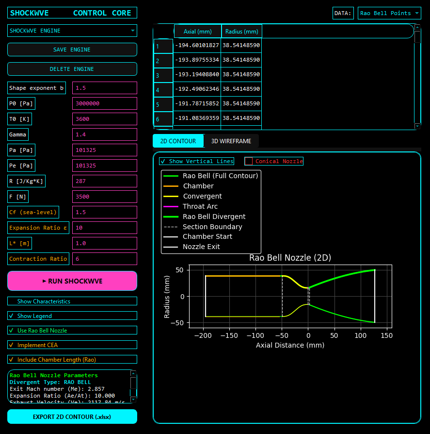
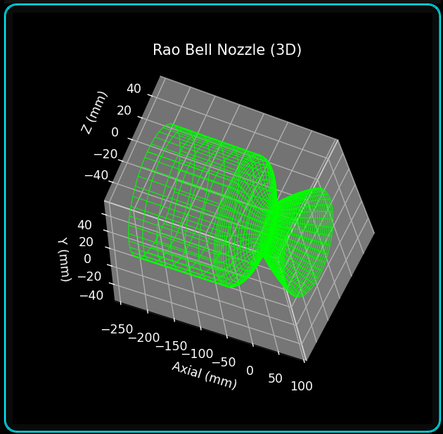

A Python-based nozzle geometry generation platform integrating Method of Characteristics (MOC) and Rao bell design, with simulation-ready contour export.
ShockWve bridges analytical propulsion modeling and high-fidelity CFD validation.
ShockWve is a modular nozzle design environment built to generate smooth, simulation-ready contours from thermodynamic and geometric inputs.
It integrates analytical performance modeling, geometric construction, spline smoothing, and structured export within a single workflow.
Both engines compute exit Mach number, expansion ratio, throat/exit radii, thrust consistency, and expansion regime classification.
The ShockWve control panel provides structured input fields for:
Inputs are validated before computation to maintain physical consistency.

ShockWve constructs the nozzle geometry using:
The final contour is resampled at high resolution and prepared for CFD meshing or CAD reconstruction.
The platform also evaluates mass flow rate, exit Mach number, thrust consistency, and over/under-expanded flow conditions.

The generated nozzle contour is exported as structured coordinate data, enabling direct import into:
View Source & Releases on GitHub
ShockWve integrates analytical propulsion modeling, geometric construction, and CFD-ready export into a unified design environment.